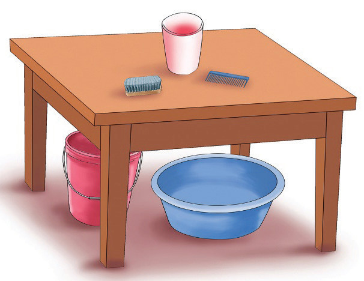

Bahati: Where is the brush and the comb?

Tumani: The brush and the comb are on the table.
Bahati: Where is the glass?
Tumani: The glass is on the table.
(b) Read the following story, paying attention to the ways the highlighted words are used.
Nengai and Penny, the Parrot
One sunny day, Nengai decided to visit her friend, Penny the Parrot, who lived at the top of the tallest tree in the forest. Nengai packed some food and put it in her bag. She carefully placed her bag on her back and started the journey.
Finally, Nengai reached Penny’s tree. She looked up and saw Penny sitting on a branch, singing happily. “Hi, Penny! I’m here under your tree!” Nengai called out.